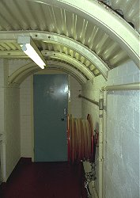

Sonstiges
|  | |
|---|---|
| Bild: Im Bunker Hellfire Corner, in den Klippen von Dover, Großbritannien. |
Viele künstliche unterirdische Sehenswürdigkeiten passen eigentlich nicht so recht in eine Schublade. Manchmal sind sie noch nicht mal unter der Erde!
So wurde es nötig diese Kategorie Sonstiges zu schaffen. Hier paßt alles rein, was sonst nicht unterkomt. Und das ist eine ganze Menge.
So unspezifisch der Titel Sonstiges ist, so vielfältig sind die Einträge hier:
- Eisenbahn- uns Straßentunnels.
- Bierkeller und andere künstliche Lagerräume.
- Wohnhöhlen und Höhlenwohnungen.
- Höhlenkirchen.
- Air raid shelters and underground war rooms.
- Zwergenbehausungen.
- Künstliche Höhlen in Museen und Universitäten.
- Künstliche Höhlen in Parkanlagen und Gärten.
- Unterirdische Fabriken.